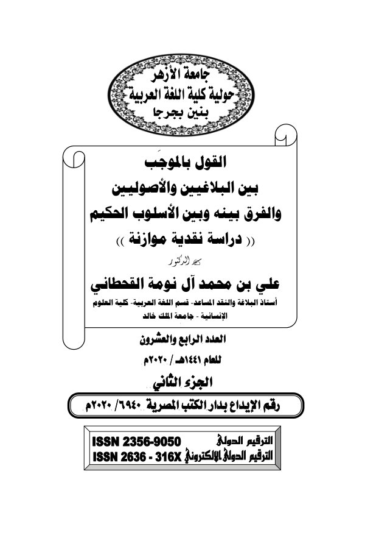

القول بالموجب بين البلاغيين والأصوليين والفرق بينه وبين الأسلوب الحكيم - دراسة نقدية موازنة
أ.د. علي بن محمد آل نومة القحطاني
- المؤلف
- أ.د. علي بن محمد آل نومة القحطاني
- التصنيف
- اللغة العربية وأسرار بيانها
- عدد الصفحات
- ٣٦ صفحة
- تاريخ الإضافة
مؤلفات أ.د. علي بن محمد آل نومة القحطاني ‹ اللغة العربية وأسرار بيانها

أ.د. علي بن محمد آل نومة القحطاني